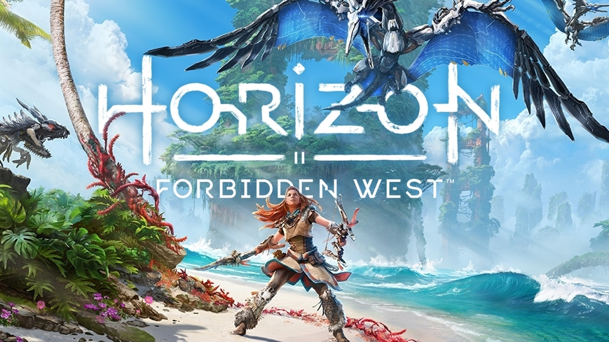
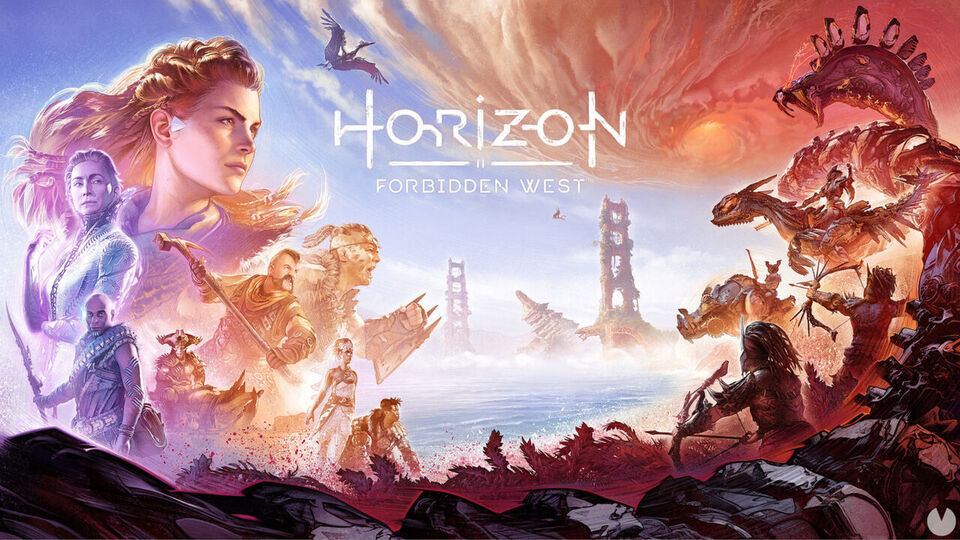

Tienda online
Lego 42130 - BMW M 1000 R
Desarrollada para las competiciones deportivas y perfeccionada para la carretera, la BMW M 1000 RR ha
conquistado los corazones de los fans de las motos y los deportes de motor. Ahora, dar forma a su versión en
maqueta LEGO® Technic (42130) te sumergirá en una estimulante experiencia de construcción consciente.
Puro rendimiento
Explora los numerosos detalles que incorpora la impresionante maqueta de la moto (la primera a escala 1:5 del
universo LEGO Technic). Con características de gran realismo, guarda un extraordinario parecido con la de verdad
y se mueve como ella. Examina la caja de cambios de 3 velocidades (más punto muerto) que funciona, la dirección,
la suspensión delantera y trasera, la transmisión por cadena y el motor de 4 pistones en línea. La maqueta de la
moto, con icónicos elementos de la marca BMW, trae 2 bases de exposición para contemplarla en toda su elegancia.
Conduce tu deseo
La BMW M 1000 RR LEGO Technic forma parte de una colección de modelos LEGO para adultos.
- Un set de construcción para adultos: Arranca tu motor creativo con este gratificante modelo. La maqueta en
kit LEGO® Technic BMW M 1000 RR (42130) es el set perfecto para adultos que busquen un proyecto práctico.
- Repleta de funciones: Explora los fieles detalles de esta maqueta a escala 1:5, como la caja de cambios de 3
velocidades (más punto muerto), la dirección, la suspensión delantera y trasera, la transmisión por cadena y
el motor de 4 pistones.
- Elegante aspecto: Admira la genuina combinación de colores en rojo, blanco y azul, y los icónicos elementos
de la marca BMW. Desde los neumáticos hasta el parabrisas, en esta versión en maqueta no se ha pasado por
alto ningún detalle.
- Sensacional regalo del mundo de BMW: A cualquier amante de las motos le encantará recibir esta espectacular
maqueta en kit. Diseñada especialmente para adultos, les permite disfrutar de un proyecto envolvente y una
elegante pieza de exposición.
- Escala 1:5: Esta extraordinaria maqueta (sin la base de exposición) mide aproximadamente 27 cm de altura, 45
cm de longitud y 17 cm de anchura.
- Exhibe tu pasión con orgullo: Colocada en la base de exposición o el soporte de carrera que incluye el set,
la impresionante maqueta de la moto dará pie a interesantes conversaciones.
- Una verdadera alianza: Este kit de construcción es el resultado de la colaboración entre BMW y el equipo de
diseño de LEGO® Technic.
- Un modelo LEGO® Technic para adultos: Forma parte de una gama de maquetas en kit para adultos que ofrecen
una fantástica oportunidad de conocer su ingeniería y, a la vez, de evadirse con un relajante proyecto de
construcción.
- Materiales de calidad: Los componentes LEGO® Technic cumplen rigurosas normas del sector, por eso presentan
siempre las mismas cualidades, son compatibles entre sí, y se conectan con total fiabilidad una y otra vez.
- La seguridad es lo primero: Los componentes LEGO® Technic se dejan caer, se calientan, se aplastan, se
retuercen y se analizan para verificar que satisfacen estrictos estándares mundiales de seguridad.
Haz clic en LEGO BMW M 1000 R para acceder a la página de compra.


Horizon Forbidden West PS4
Te presentamos el nuevo Horizon Forbidden West, la secuela de uno de los buques insignia de la anterior
generación que vuelve para hacerte vivir una increíble aventura acompañando a Aloy por las peligrosas y
fantásticas tierras del 'oeste prohibido' donde deberás enfrentarte a nuevas y misteriosas amenazas. Un juego
que no puede faltar en tu colección, hazte con él en GAME.
Explora páramos remotos, enfréntate a máquinas más grandes e imponentes y descubre increíbles tribus en tu
regreso a un futuro lejano en el mundo apocalíptico de Horizon. La tierra se muere. Las rugientes tormentas y
una desolación imparable causan estragos entre lo que queda de la humanidad, unas cuantas tribus dispersas,
mientras nuevas y temibles máquinas merodean por sus fronteras. La vida en la Tierra se enfrenta a una nueva
extinción y nadie sabe por qué.
Solo Aloy es capaz de descubrir los secretos que hay detrás de estas amenazas, y restablecer el orden y el
equilibrio en el mundo. Por el camino, se reunirá con viejos amigos, forjará alianzas con nuevas facciones en
guerra y descubrirá la herencia de un antiguo pasado, al tiempo que intenta permanecer un paso por delante de un
nuevo y aparentemente invencible enemigo.
Haz clic en Horizon Forbidden West PS4
- GAME para acceder a la página de compra.

Hogwarts Legacy Deluxe Edition
Disfruta del Hogwarts del siglo XIX. Tu personaje es un alumno o alumna del famoso colegio que tiene la clave de
un antiguo secreto que amenaza con destruir el mundo mágico. Ahora puedes tomar el control de la acción y ser el
centro de tu propia aventura en el mundo mágico. El legado está en tus manos.
Características:
- Explora un mundo abierto. El mundo mágico te aguarda. Explora y recorre libremente el Castillo de Hogwarts,
Hogsmeade, el Bosque Prohibido y las tierras que lo rodean.
- Sé el mago o la bruja que quieras ser. Aprende hechizos, elabora pociones, cultiva plantas y cuida de
animales fantásticos a lo largo del viaje. Sé seleccionado para tu casa, forja relaciones y aprende las
habilidades que te conducirán a convertirte en el mago o bruja que quieras ser.
- Vive una aventura nueva en el mundo mágico. Vive el mundo mágico en una época remota sin explorar y descubre
una verdad oculta de ese pasado. Combate contra trols, magos tenebrosos, duendes y más en tu camino hacia la
gran batalla contra un peligroso enemigo que amenaza el destino del mundo mágico.
Compra el juego de Hogwarts Legacy Deluxe Edition para la consola PlayStation 4, un juego de rol inmersivo en
mundo abierto que se inspira de los libros de la saga Harry Potter.
Esta edición incluye:
- Paquete de artes oscuras
- Monte Thestral
- Conjunto cosmético de artes oscuras
- Arena de batalla de artes oscuras
- Montura de hipogrifo de ónix
- Sombrero de guarnición de artes oscuras
Haz clic en Hogwarts
Legacy Deluxe Edition PS4 - GAME
para acceder a la página de compra.

 Volver al índice
Volver al índice